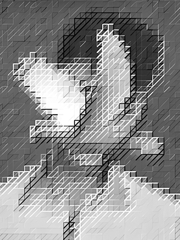

Panatang Makabayan, according to
Hover over any word, and the machine finishes the pledge from there.
Notes
No AI runs on this page. Everything you see in the Playground was generated once, ahead of time.
Process
For each word of the pledge, the text up to that word was given to each model, which wrote the rest. The final word gets nothing: there, the pledge simply ends. Each of the other 62 words has two versions per model: 496 independent calls, none aware of the others. Hovering shows one of the two at random.
Prompt
system You are a helpful assistant. user Continue this text from exactly where it stops, even if it stops mid-sentence or mid-line. Output only the continuation. Iniibig ko ang Pilipinas, aking lupang sinilangan tahanan
Same prompt for every model. No output language was specified.
Models
| Model | Made by | Origin |
|---|
Voices
The second group in the menu is not a prediction. For each voice, Claude Fable 5.1 was given the whole pledge and asked to rewrite it as that person would say it. The language was left for each voice to choose. Each voice has two versions; one is picked at random.
user
Here is the Panatang Makabayan, the patriotic pledge recited by Filipino schoolchildren:
[the full pledge]
Rewrite it as a Spanish friar in the Philippines in the 1880s would say it: their own pledge, in their own voice, language and worldview. Keep roughly the same length and line structure. Output only the rewritten pledge, no title or commentary.
Origin
Originally created for Mga Sigaw ng Bayan Kong Sawi, a prompt of the Santelmo Pambansang Hámon sa Pagtula 2026, which invited poets to answer, with or without AI, the question: who are we, and what is the identity of a Filipino?
About the Project
This is an experiment in machine continuation. The subject is the Panatang Makabayan, the pledge recited by Filipino schoolchildren. The text is cut after each of its words, and each truncated version is given to a language model to complete. The hovered word marks the point of truncation; everything after it is the model's prediction.
A second set of trials holds the text whole and varies the speaker. One model is asked to restate the full pledge under ten assigned identities, from a friar of the 1880s to the country itself.
Three variables change: where the text is cut, which model completes it, and who is speaking. Everything else is held constant: a single prompt, a single temperature, no output language specified. Every output was generated once, in advance, and is shown as recorded. No conclusions are drawn here. The results are left to the reader.
About the Author

Láyon holds a Master's degree in Data Science from Ateneo de Manila University. Upon graduation, they received the Mulry Award for Literary Excellence and the Ateneo College Awards of the Arts in Poetry. They are also a recipient of the National Youth Achievement in Literary Arts, awarded by the Philippine National Committee on Literary Arts.
They're an active member of Linangan sa Imahen, Retorika, at Anyo (LIRA), and their work has appeared in the regular issues of HEIGHTS, Ateneo's literary publication, where they also served as managing editor. Their academic and creative interests lie at the confluence of artificial intelligence, language, and the posthuman.
Akala ni Láyon matematika ang mapapangasawa niya. Ngunit nang makilala ang pagtula, hindi na mabuo-buo ang kanyang isip. Hanggang ngayon, hinahanap niya pa rin ang sariling layon.
Email: layon.connect@gmail.com